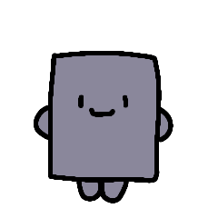

疲れた心に、そっと寄り添う
ゆるきゃら
まるで柔らかなこんにゃくにもたれかかるような、安心感と癒しをあなたに。

ぬりかべって、だれ？
ぬりかべは、むかしから人の前に立ちはだかる妖怪として知られています。でも、ここでは少し変わり者なぬりかべをご紹介。
このぬりかべは、とてもやさしく、人間にそっと寄り添う存在。言葉少なだけれど、そばにいてくれると不思議と安心できるのです。
ぬりかべさんのプロフィール
- なまえ： ぬりかべさん
- とくいなこと： 寄り添うこと、じっと見守ること
- せいかく： 無口、だけど本当はやさしい
- ひみつ：実はこんにゃくみたいに、ぷるぷる柔らかくなれる